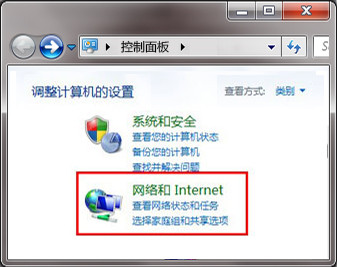
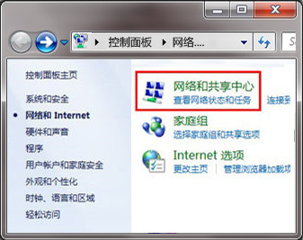
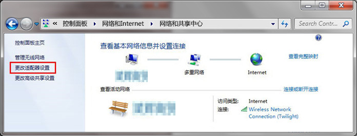
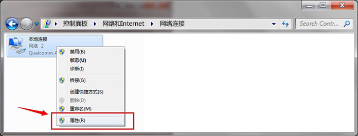
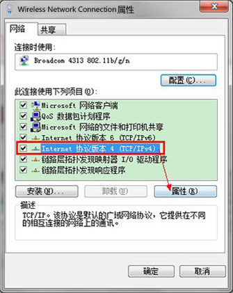
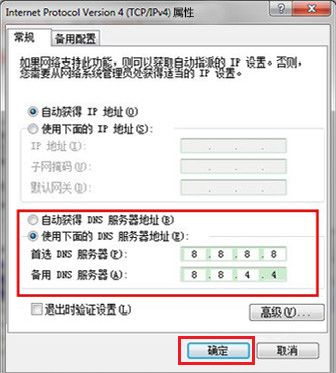

近期您可能有碰见登录网站时，页面跳转到另外陌生网页的情况。这是由于您的网络供应商漏洞而造成的。
那么该如何避免这样的问题呢？
1. 请不要轻易连接陌生网络。
2. 可以通过手动指定DNS（DNS用于将域名正确转换为您想访问的网站的作用），修改后你的网络应用将更加稳定，安全。
以下是具体修改方式：
那么该如何避免这样的问题呢？
1. 请不要轻易连接陌生网络。
2. 可以通过手动指定DNS（DNS用于将域名正确转换为您想访问的网站的作用），修改后你的网络应用将更加稳定，安全。
以下是具体修改方式：
手动修复本地DNS教程
请根据以下简单步骤即可手动修复本地DNS：
步骤1：
点击桌面左下角的 [开始]按钮，打开 [控制面板]，查看方式为类别，点击 [网络和Internet]，再进入 [网络和共享中心]。
 
步骤2：
点击 [更改适配器设置]。

步骤3：
右键点击当前活动的网络连接，点弹出菜单中的 [属性]。

步骤4：
选择 [Internet 协议版本 4 (TCP/IPv4)]，再点击 [属性]。

步骤5：
选择 [使用下面的DNS服务器地址]，输入 [首选 DNS服务器为 8.8.8.8 ]和 [备用DNS服务器为8.8.4.4]，然后点击 [确定]。

注：
若完成手动修复本地DNS后仍无法解决问题，您可以参阅以下链接：
https://support.microsoft.com/zh-cn/kb/972034